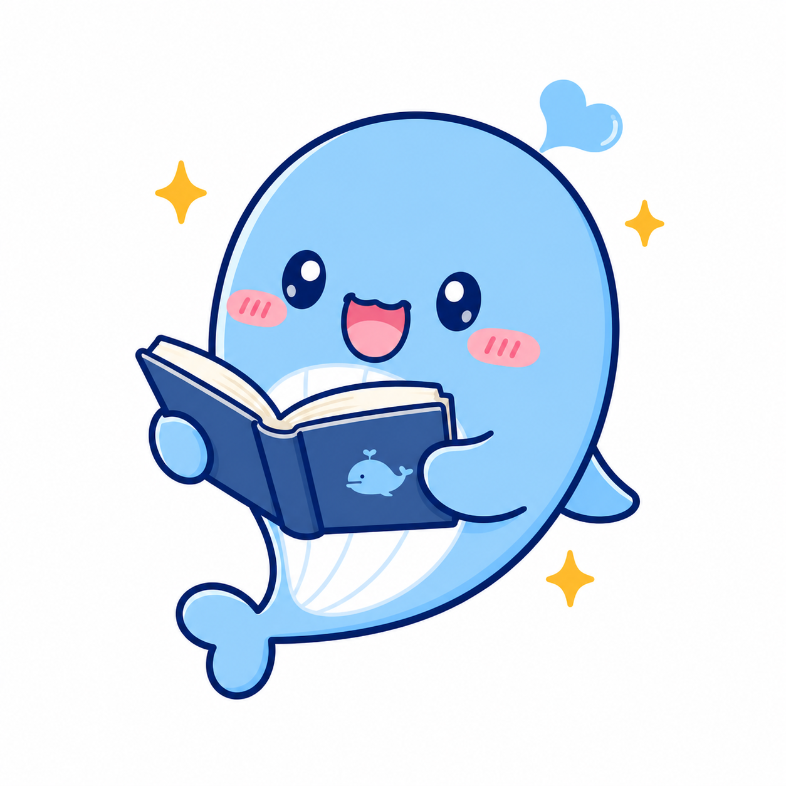

读懂 Agent Loop
从 messages、模型决策、tool call、结果回填到结束条件，直接对应源码和测试，不把关键逻辑藏进框架黑箱。

Whale CLIWhale CLI 把模型调用、工具注册、运行循环、审批、会话、MCP 和学习模块放在一个小而完整的工程里。学习者既能使用它完成任务，也能沿教程逐层读懂每个模块为什么存在。
底层是可观察、可测试的 Agent Runtime；上层是面向 Datawhale 学习者的陪学闭环。两者共享同一个工具池、会话和安全边界。
从 messages、模型决策、tool call、结果回填到结束条件，直接对应源码和测试，不把关键逻辑藏进框架黑箱。
通过 Toolset、Skills、Hooks、Subagents、Background Tasks、MCP 和项目上下文逐步扩展，不破坏核心循环。
Datawhale BM25 检索提供项目证据，学习者档案和知识关系决定路线粒度，每一步都有可手动完成的 checklist。
对话可以沉淀为 Obsidian Wiki、间隔复习表、项目证据和学习档案，帮助学习者回看、展示并继续贡献。
模型不会直接操作系统。请求必须经过 Soul、Toolset、Approval 与 workspace policy；运行轨迹会回到会话，长上下文还能压缩和恢复。
保存对话、附件和项目上下文，恢复时继续使用同一条消息链。
驱动模型回合，判断回答、调用工具、继续循环或结束任务。
统一暴露 schema、分发调用，并接入内置工具、MCP 与学习工具。
写文件和命令默认询问，同时执行工作区与危险命令策略。
工具结果、失败和完成状态回填到下一轮，也呈现在 WebUI 轨迹中。
学习目标会被拆成可以完成的子任务。用户确认路线、手动标记完成、触发复习，再把真实产出写回知识图谱和学习档案。
记录基础、目标、每周时间和偏好，避免用同一套答案对待不同阶段的人。
BM25 同时利用项目元数据与 GitHub README，为推荐提供可追溯证据。
路线拆到周、任务和 checklist，完成状态由学习者明确确认。
间隔复习、Obsidian 双链、项目档案和贡献草稿共同形成长期资产。
教程不只描述概念。每章都对应项目里的模块、最小案例、运行命令和测试，让学习者可以边读边改。
源码模式适合学习和开发；Docker 模式适合固定环境部署。两者默认只监听本机，运行数据与工作区分开保存。
python3 -m venv .venv
source .venv/bin/activate
python -m pip install -e ".[dev]"
make web
whale-doctor --web
whale-web0.3.0 已通过 Python、React、wheel、Docker 和 HTTP 健康检查。当前边界是本地或可信内网工具，公网部署前仍需增加身份认证、HTTPS 与多用户隔离。
使用 `make release` 运行统一门禁，使用 `whale-doctor --web` 检查目标环境，服务通过 `/health` 与 `/ready` 提供进程和就绪状态。